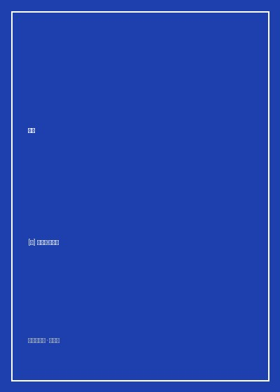

《舆论》

总体观点
人与真实世界之间隔着一层由大众媒介构筑的‘拟态环境’（Pseudo-environment）。公众绝大多数时候并非对客观现实做出反应，而是对媒介投射在他们头脑中的想象图像做出情感化反应，使得群体舆论天生具备失真与易受操纵的脆弱性。
人类认知资源有限，为了简化对复杂外部世界的理解，必然依赖高度定型化的‘刻板印象’（Stereotype）。刻板印象不仅充当了认知过滤器，更成为个体捍卫自我社会地位与安全感的心理防线，导致偏见深植于日常话语体系。
传统民主理论假设存在全知全能、理性自决的‘主权公民’，这在现代巨型社会中纯属乌托邦神话。面对专业化与碎片化的现代议题，必须引入独立的专家智库与事实调查机构充当知识中介，以专业智慧弥补公众认知的天然盲区。
核心观点
-
1. 拟态环境与真实世界的裂隙
人们无法亲身经历浩瀚世界的每一个角落，只能依靠报纸、广播等媒介二手信息来构建认知。媒介所建构的符号世界与客观现实并不重合，但人们却误以为自己直接面对着真实。
一战期间交战国媒体各自包装前线战况，交战双方士兵家属都坚信己方正以极小伤亡逼近最终胜利，直至停战协定签署才惊觉战局全貌。 -
2. 刻板印象的防御机制
刻板印象并非单纯的逻辑错误，而是人们在未经反思前便内化的文化滤镜。它替我们预先界定了什么是好的、什么是可疑的，并保护我们的传统习惯与自尊心不受异己观念的冒犯。
都市中产阶级往往本能地将街头流浪者归类为‘懒惰且危险的群体’，用现成的负面标签免除自己深入探究住房危机与贫困救济制度缺陷的认知负担。 -
3. 兴趣与关注的自私狭隘性
普通公众对于公共事务的注意力极其短暂且高度自利，只有当外部事件直接威胁或奖赏切身私利时，才会激发短暂的政治热情，其余时刻则处于漠不关心的沉睡状态。
市民对市政预算长达数百页的财政开支审议毫无兴趣，但当听闻邻近街区将新建一座垃圾焚烧厂时，便会一夜之间群情激愤发起抗议。 -
4. 符号制造与多数人服从
政治领袖和大众传媒通过提炼高度抽象但富有强烈道德光环的象征符号，抹平不同群体的利益冲突，制造虚幻的‘多数意志’，达成操纵共识的目的。
在战时动员中，煽动者通过高呼‘保卫文明’或‘捍卫荣誉’等无法证伪的崇高口号，让不同社会阶层放弃对具体军工合同利益输送的追问。 -
5. 情报机构与专家中介的必要性
指望没有受过专业训练的普通公众在复杂外交、金融与公共卫生政策上做出理性决断是危险的。民主制度的健康维系，必须依赖去意识形态化的客观情报收集与专家咨询系统。
公共卫生防疫政策的制定不能由街头民调决定，必须依赖流行病学家与统计学团队通过严谨的血清抽样与接触者追踪数据来提供循证决策底稿。
全书结构
-
第一篇 导论：外部世界与脑中意象
提出全书核心隐喻：头脑中的图景与外部真实世界的断裂，探讨个体认知如何受制于信息传播的物理与心理边界。
以孤岛上的英法德三国移民在欧洲大战爆发六周后仍不知情、彼此友善共处为例，论证人类行动基于脑海意象而非客观世界。 -
第二篇 走向外部世界的方法
分析妨碍公众获取真实客观事实的几大障碍：人为的审查保密、社交接触的局限性、贫乏的语言词汇与注意力分散。
战时政府设立新闻审查局对电报内容实施剪裁，使即便派驻前线的战地记者也只能向后方传递经过官方筛查的残缺叙事。 -
第三篇 刻板印象
详细阐释刻板印象的定义、成因及其作为文化防御长城的功能，论证刻板印象如何先入为主地规范个体感知。
分析白人陪审团在审判黑人嫌疑人时，如何在潜意识中直接套用‘暴戾犯罪’的既定模板，自动忽略有利于辩方的关键不在场证明。 -
第四篇 兴趣与利益
探讨公众如何将公共问题转化为个人利益投射，揭示私利如何在道德遮羞布的包装下变异为激进的公共诉求。
工商业巨头以‘保护国家制造业命脉’为由游说国会提高关税，掩盖其试图排除海外竞品以维持国内垄断高价的真实意图。 -
第五篇 公共意志的形成
剖析象征符号的提炼与情感共鸣机制，揭示大众传播如何通过制造‘共识的幻象’将分散的乌合之众统一为政治合力。
竞选团队将候选人打造成‘普通伐木工的儿子’的符号形象，用草根温情符号代替对税收政策与医疗改革具体法案的深入讨论。 -
第六篇 民主形象的破灭
从思想史角度反思卢梭等经典启蒙思想家关于全知公民与公意的天真预设，批判将公众意志神圣化的民粹倾向。
指出古希腊城邦民主只适用于数百人广场辩论的微型熟人社会，强行移植到拥有数亿人口的现代大陆国家必然导致舆论失控。 -
第七篇 报刊的局限
剖析现代商业新闻业的运作规律，论证报纸是按市场逻辑生产事件报道的聚光灯，不可能充当持续监督全社会的常明灯塔。
报社记者只能在突发火灾或丑闻曝光时赶往现场，而无法也不可能常年监测全市自来水管道的铅超标微观演变趋势。 -
第八篇 现代社会的情报机制
提出李普曼的建设性解决方案：建立专业、独立、非党派的数据统计与情报调查局，为决策者与公民提供可靠事实基准。
设想在农业部与商务部内设立独立于政客升迁体系的数据统计局，让农作物产量与进出口关税调整完全建立在实证测算之上。